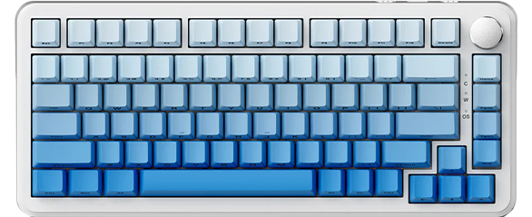

Ajazz AK820 MAX
Цена: ~5 185 ₽

0,85 цветной экран lnch TFT:Прочный цветной экран высокой четкости TFT с возможностью отображения времени, режимов подключения, состояния батареи и пользовательской красочной анимации GlF.
Чистый и приятный звук:Силиконовая Нижняя накладка по сэндвич-хлопку, накладка переключателя lXPE с множественным заполнением зазора переключателя эффективно снижает шум, вызванный ударом по переключателю, кажется более твердым, звук более чистым и приятным.
Слот PCB одиночный ключевой:1,2 Толщина мм, конструкция слота с одним ключом, один переключатель и один слот только для лучшего ощущения, большей мягкости и эластичности.
Подножка двух-этапа Регулируемая:Двухступенчатая Конструкция подножки позволяет регулировать углы входа в соответствии с вашими предпочтениями, противоскользящие резиновые прокладки устанавливаются внизу, чтобы обеспечить более стабильное использование.
Боковые функциональные клавиши:Беспроводное, Bluetooth, проводное, трехрежимное переключение и переключение окон и систем Mac расположены на верхней стороне, не нужно переворачивать.
Горячая замена:Клавишные переключатели с возможностью горячей замены для всех клавиш, позволяющие свободно переключать переключатели и настраивать клавиатуру, которая соответствует вашим предпочтениям набора текста.
Музыкальный ритм RGB:Оснащенная передовой технологией распознавания звука, подсветка клавиатуры может колебаться в зависимости от ритма воспроизводимой музыки, превращая слуховое удовольствие в визуальное воздействие.
4000mAh литиевая батарея:С маломощным чипом и энергосберегающей технологией. Делает аккумулятор более мощным и служит дольше
Видео-обзор: https://youtu.be/QW_NkkFjsU4?si=Nv8NFBY0918oRxxt
Купить можно на Aliexpress: ERID LINK HERE